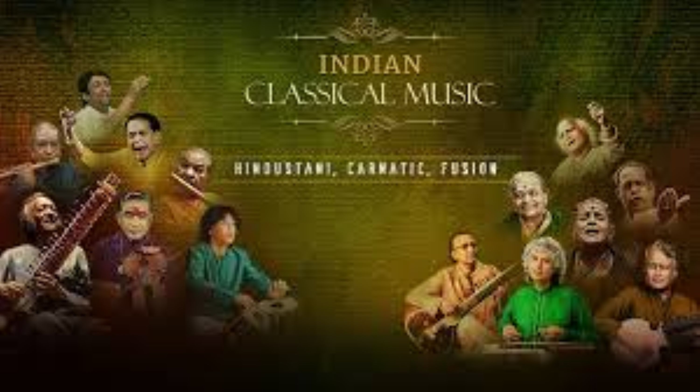
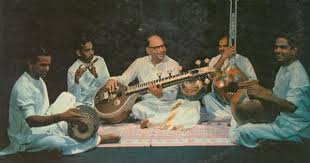

Music & Dance
India's rich cultural heritage is beautifully expressed through its diverse music and dance forms, ranging from ancient classical traditions to vibrant folk performances.
Indian Classical Music

Hindustani Classical Music
Originating in North India, Hindustani music is characterized by ragas (melodic frameworks) and talas (rhythmic cycles). It includes vocal forms like khayal, thumri, and dhrupad, and instrumental styles played on sitar, sarod, and tabla.

Carnatic Classical Music
The classical tradition of South India, Carnatic music is known for its devotional compositions, complex rhythmic structures, and emphasis on vocal performance. The violin, mridangam, and veena are prominent accompanying instruments.
Classical Dance Forms
Folk Music & Dance
Folk Music Traditions
India's diverse regions have unique folk music styles:
- Baul from Bengal - mystic minstrels
- Lavani from Maharashtra - energetic performances
- Bihu from Assam - harvest festival songs
- Rajasthani folk - with instruments like morchang and khartal
Folk Dances
Vibrant folk dances reflect local traditions:
- Bhangra & Giddha (Punjab)
- Garba & Dandiya (Gujarat)
- Chhau (Eastern India)
- Theyyam (Kerala)
- Bihu (Assam)